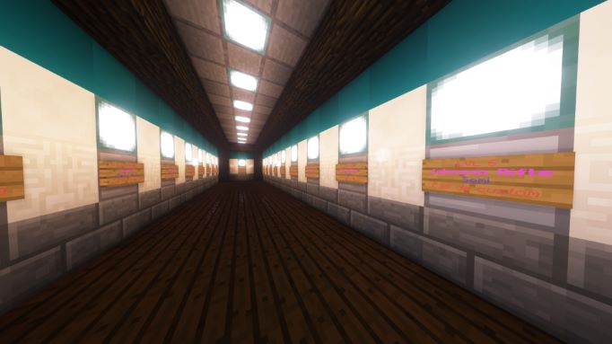

Ce serveur est un serveur de mini-jeux modés.
Noham a codé tous les mini-jeux lui même, grace aux commands blocks mis à disposition par le jeu.
Plus d'info sur le système des command blocks
Le projet de ce serveur est de proposer un grand nombre de mini-jeux, dont certains utilisent des mods.
Noham a mis en place ce serveur privé pour le plaisir de créer des jeux et d'y jouer avec des amis ou personnes de l'école.
Ce n'est pour l'instant qu'un prototype, mais des progrès sont faits chaque semaine pour améliorer les jeux ou en ajouter de nouveaux.
Dans le TNT run, les joueurs doivent courrir sur des TNT qui tombent dès qu'ils marchent dessus.
Le but est d'être le dernier à tomber.
Dans le Dé à coudre, les joueurs sautent dans une piscine du haut d'un plongeoir et posent un bloc de couleur là où ils atterissent.
Le but est de tomber dans l'eau pour annuler les dégats de chute en évitant les blocs posés par les autres joueurs, qui eux, signifient la mort.
Dans le spleef, les joueurs sont sur une couche de neige au dessus d'un lac de lave.
Le but est de faire tomber les autres joueurs, en détruisant la neige avec une pelle ou en leur lançant des boules de neige pour les faire tomber.
Ce mode de jeu est basé sur une modification du jeu, "Vic's Modern Warfare"
qui rajoute des armes à feu très détaillées a Minecraft.
Ce mode de jeu inclus une séléction de map, un compteur de kills et de morts, ainsi qu'un systeme de séléction de loadout avec des armes déblocables en éliminant des ennemis.
Le système de séléction d'armes à été la chose la plus difficile à mettre en place, et utilise beaucoup de commandes. J'ai donc simplifié les explications en ne décrivant que quelques commandes.
Après avoir choisi sa catégorie d'arme, le joueur est téléporté dans le lobby correspondant.
Dans cette salle, chaque panneau est cliquable et correspond à une arme diférente.

Quand le joueur clique sur un panneau, si il n'as pas le niveau nécessaire, le jeu lui envoie un message, sinon, il lui donne une arme, des munitions et le téléporte à la suite de la séléction (pistolets).
A chaque élimination, le niveau du joueur est augmenté de 1.
Cela permet de débloquer les armes suivant le niveau du joueur, ce qui ajoute de la progression, comme dans un vrai jeu vidéo.
Ci dessous : la commande /give donne un fusil d'assaut aux joueurs de niveau 35 et plus.
Oui, il est prévu d'ajouter d'autres modes de jeu, comme par exemple des courses de voitures, ou un mode "Capture The Flag", mais aussi plus de maps pour le mode Call Of Duty.